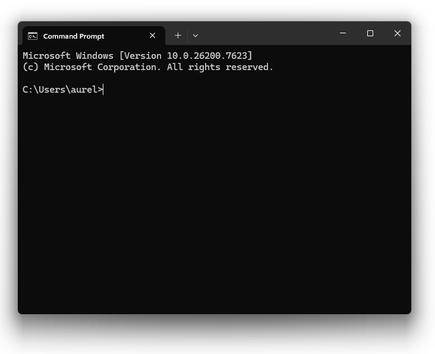
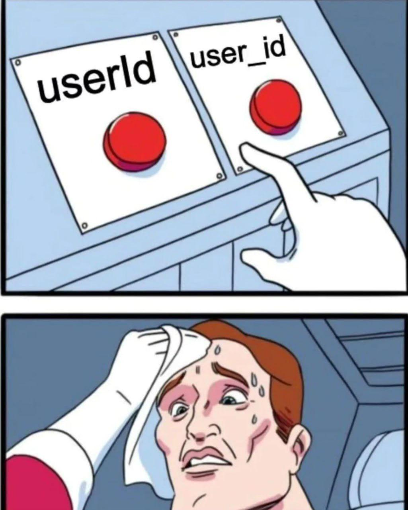
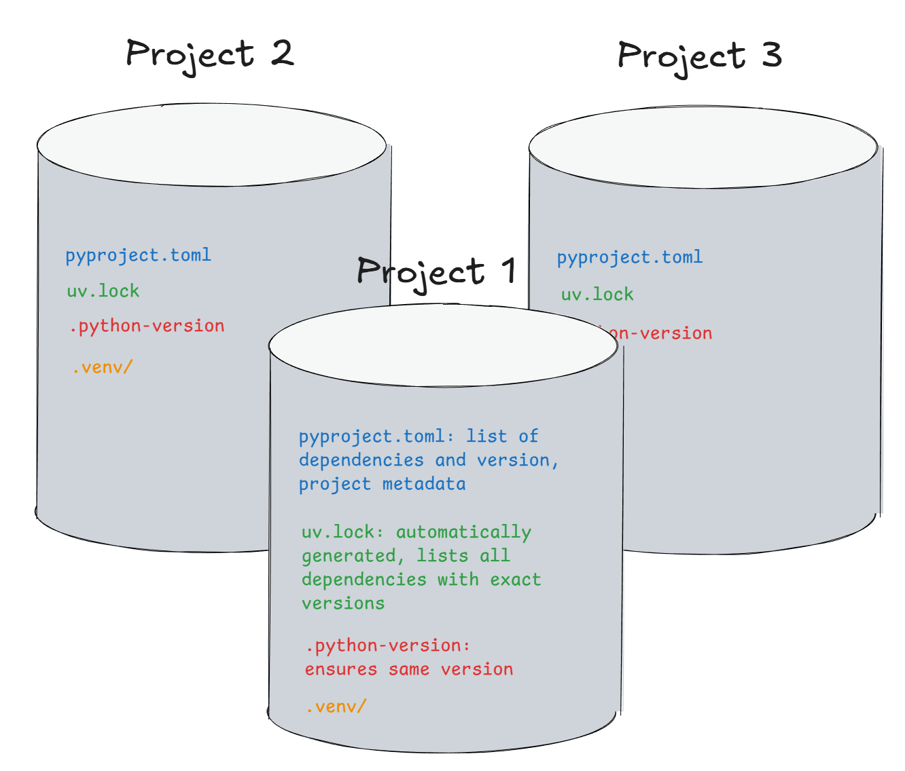

print('Hello World')Hello Worldprint(2 + 3) # addition(+)5print(3 - 1) # subtraction(-)2Lecture 2: Getting Started
In the next 45 minutes:
We will address main concepts in the lecture, and then get hands-on in the guided exercise session this afternoon.
The terminal is a text-based interface that allows you to interact directly with your computer/operating system by typing commands.
“terminal”, “command line”, “shell”, “command prompt”
Almost everything you can do with a graphical interface can also be done from the terminal.
Because of this, terminals are widely used in programming, data science, and research workflows.
How to open:
How to open:
For this course: Use Command Prompt in Windows Terminal.

When you first open Terminal you typically are placed in your home directory. You can navigate to other directories (folders) using terminal commands.
With the terminal, you access and work with files. A file is a container of data (remember from Data Handling: 0s and 1s).
To access files, their location must be given with paths. Paths describe where a file is located.
C:/Users/Bilbo/Documents/TheRedBookofWestmarch.txtDocuments/TheRedBookofWestmarch.txtFrom the terminal, you can use shortcuts instead of absolute paths.
. current directory
.. parent directory
~ your home directory
../file.txt~/DocumentsWhen you first open Terminal you typically are placed in your home directory.
| Description | bash/macOS | Command Prompt (Windows) |
|---|---|---|
| Check your current directory (print working directory) |
pwd
|
cd
|
| List the files in the current directory |
ls
|
dir
|
| Move into and out of the directory (change directory) |
cd <directory>
|
cd <directory>
|
| Create a directory (make directory) |
mkdir data
|
mkdir data
|
cd without arguments takes you to ~| Description | bash/macOS | Command Prompt (Windows) |
|---|---|---|
| Create an empty file |
touch hello.txt
|
echo. > hello.txt
|
| Delete a file |
rm hello.txt
|
del hello.txt
|
| Print file contents |
cat hello.txt
|
type hello.txt
|
| Edit a file |
nano hello.txt
|
notepad hello.txt
|
| Copy a file |
cp hello.txt hello_copy.txt
|
copy hello.txt hello_copy.txt
|
| Move/rename a file |
mv hello.txt goodbye.txt
|
move hello.txt goodbye.txt
|
MacOS and Linux (bash, zsh) are unix systems. That’s why Mac and Linux use the same terminal commands (ls, cat, etc.), while Windows uses different ones (dir, type, etc.).
snake_case (my_file_name.py)camelCase (myFileName.py)kebab-case (my-file-name.py)
Following an established convention will not make you look like a complete novice. 😎🆒
An IDE (Integrated Development Environment) is a tool designed to help you write, run, and manage code efficiently.
Compared to a basic text editor, an IDE typically provides:
These features reduce errors and make programming more structured and productive.
Examples: VSCode, Pycharm, RStudio, Posit
Visual Studio Code (VS Code) is a lightweight but powerful code editor that behaves like a full IDE through extensions.

Python is a good first (and second…) programming language.
“It simply does not matter. If you stick around in data science long enough, you will eventually get in touch with both languages and, in turn, learn both. There is a huge overlap of what you can do with either of those languages. The point is, if you just start doing analytics using a programming language, both languages are guaranteed to carry you a long way. There is no way to tell for sure which one will be the more dominant language 10 years from now, or whether both will be around holding their ground the way they do now.” – Matthias Bannert, “Research Software Engineering”
You can use Python in different ways:
We will mainly work with .py files inside projects.
print('Hello World')Hello Worldprint(2 + 3) # addition(+)5print(3 - 1) # subtraction(-)2If you know R (which you do…), Python will feel familiar, but not identical.
In Python, indentation defines the structure of your code.
Blocks of code are created by indentation, not by curly braces {} like in many other languages.
if x > 0:
print("positive")
print("still inside the block")
print("outside the block")In Python, many things start counting at 0 (zero-based indexing).
Common in programming, even if it feels unintuitive at first.
In R, you mostly use a single global library. In Python, different projects need different python versions and package versions.
Imagine you’re working on two projects:
pandas version 1.5pandas version 2.0If you install globally, updating for Project B breaks Project A!
A Python interpreter is the program that reads and executes your Python code.
Your computer may have zero, one, or even multiple Python interpreters installed:
uv)R:
Python:
Think of each project as having its own kitchen:
In Python: A virtual environment is an isolated setup for each project with its own packages and Python version. This solves the conflict problem.
uvuv is a modern Python package manager that makes environments automatic and fast(Replaces pip, pip-tools, virtualenv, pip freeze or requirements.txt)
⚠️ Important: Never install packages globally with system Python! Always use environments.
uv projectuv project has 3 key files.python-version: python version to usepyproject.toml: dependenciesuv.lock: exact versions of packages, automatically generateduv generates a .venv/ folder containing the actual environment (don’t delete it!).

uv# Initialize a new project with its own environment
uv init my_project
cd my_project
# Add dependencies (creates/updates pyproject.toml)
uv add rich pandas
# When joining an existing project: install from lock file
uv sync
# Run code (automatically uses the project's venv)
uv run main.pyuv will store in each environment the version of the interpreter, the packages, and will “lock” each package version for the project in a lock file.